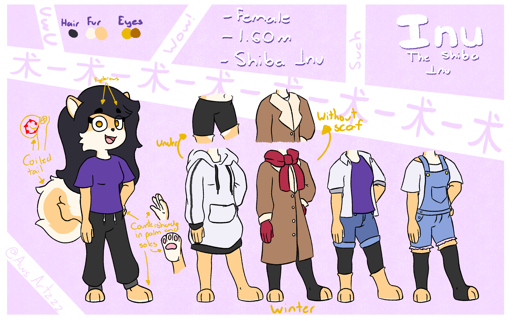
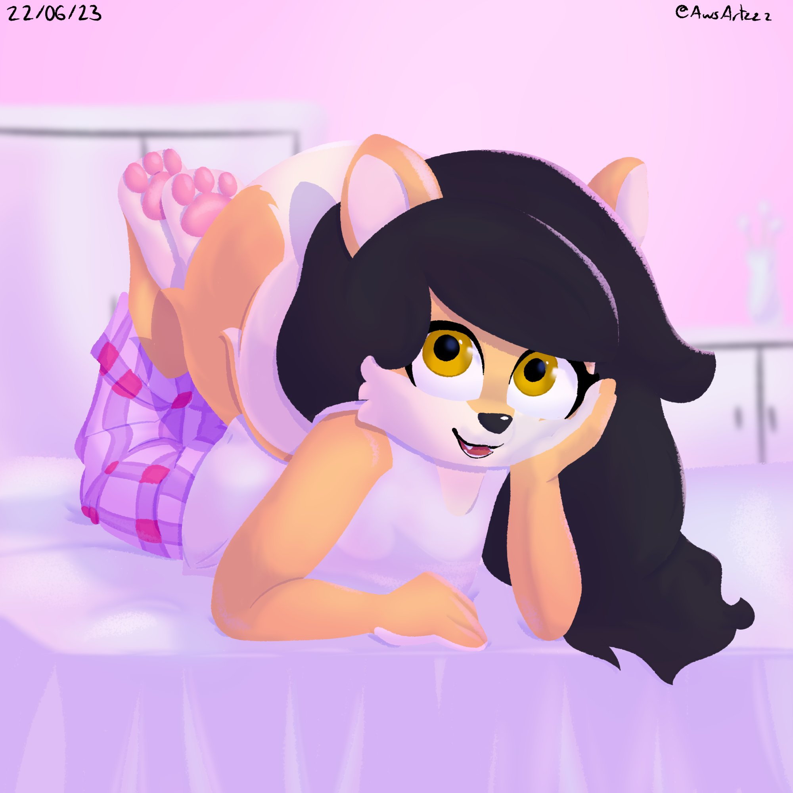
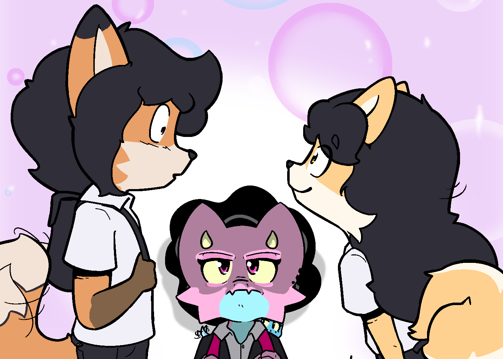
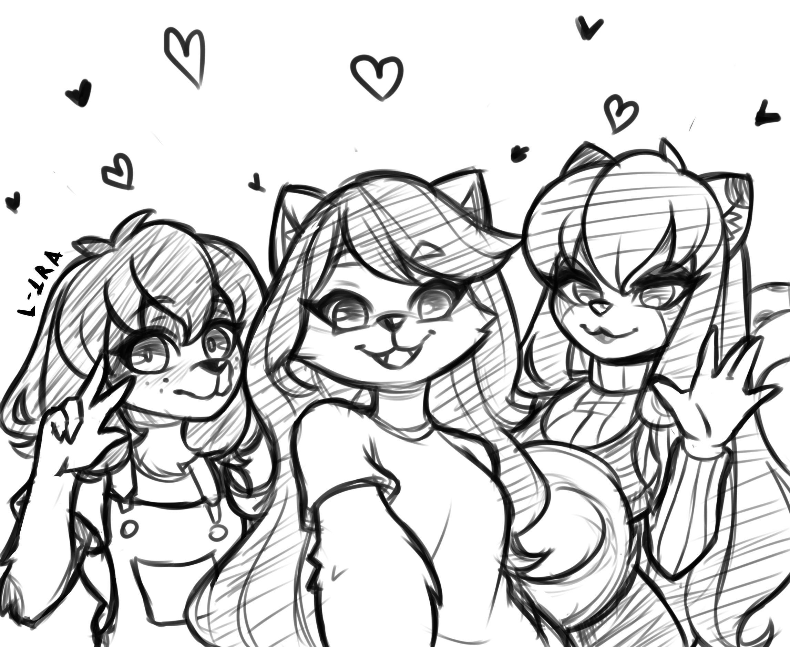
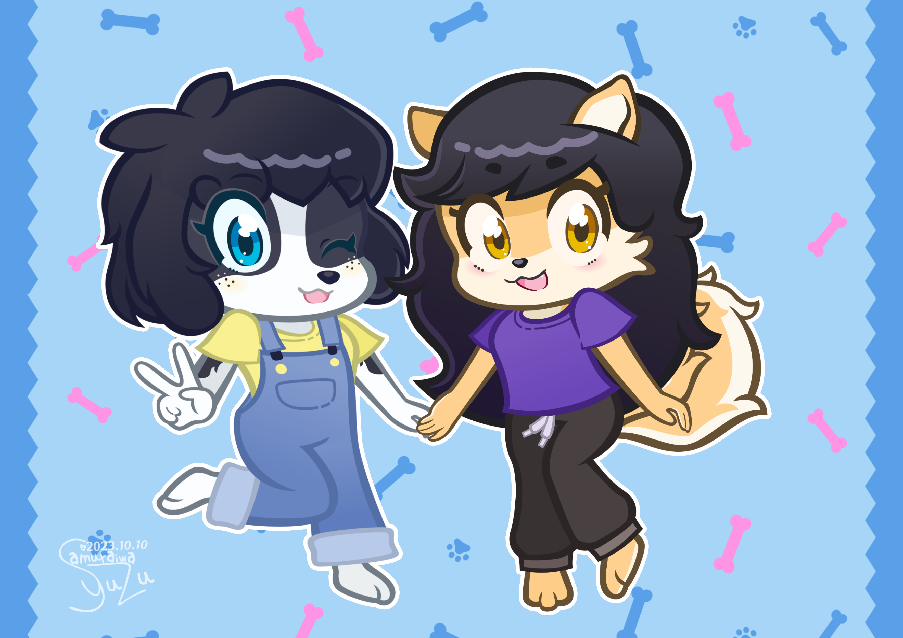

Inu
Protagonist · Inu-sual Feelings
Physical appearance

Old Inu's reference sheet.
Inu stands at 1.60 meters with an average, slender build. She has long, dark blue hair that reaches past her waist, and large, bright amber eyes. She has a short, pointed nose, and round ears that peek through her hair.
Her appearance is notably understated—everything about her suggests an ordinary student. She typically wears a standard school uniform consisting of a white short-sleeved shirt with a dark bow tie and a navy pleated skirt.
Personality

Inu on a sleepover.
Inu carries an air of quiet mystery, drawing attention with an ease so natural that she remains largely unaware of the effect she has on others. She is gentle and soft-spoken, often expressing herself through subtle gestures that feel like a calm melody cutting through the noise of everyday life. Though she appears to embody the traits of an ordinary girl, her presence stands out in a way that inspires admiration from many. Yet, despite this fascination, Inu maintains an elusive quality, as if she is always just slightly out of reach.
Relationships

Milo and Inu (And Roxanne (And Skye))
Milo
The relationship between Milo and Inu is defined by curiosity, distance, and an almost comedic sense of longing. Despite knowing very little about her, Inu occupies a surprisingly large space in Milo's heart. Her quiet charm and mysterious aura leave him both captivated and unsure of how to approach her. Meanwhile, Inu remains just out of reach, her subtle presence shaping his actions far more than she realizes.

From left to right; Laika, Inu and Chloe
Art by L-1RA
Chloe
Chloe and Inu share a close and enduring friendship that forms the heart of their trio alongside Laika. As the most assertive of the three, Chloe naturally takes on the role of Inu's protector, keeping a careful eye on her due to the attention Inu often receives. There's an unspoken understanding that wherever Inu is, Chloe is never far behind.

Art by サムライワ ユズ
Laika
Inu and Laika share a gentle, steady friendship shaped by their mutual connection to Chloe. Though not as tightly bonded as either is with her, their relationship has grown naturally through time spent together as a trio.
Trivia
- Inu loves Cheese.
- Originally, she was going to be a gift for a friend who really liked Shiba Inus. I ended up not giving her away and she grew on me a lot.